bin/slowframe -i tests/images/alt3_test_panel_2310x1360.png -p m1 -o tests/test_outputs/format_validator/test_format_png_alt3_test_panel_2310x1360.wav -KInput
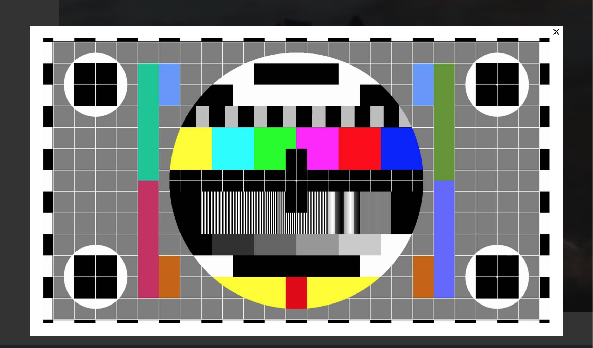
Output
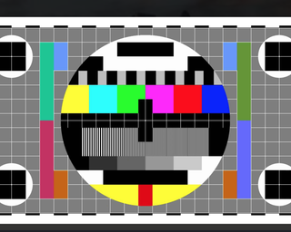
tests/test_outputs/format_validator/test_format_png_alt3_test_panel_2310x1360.wavCreated: yes
bin/slowframe -i tests/images/alt2_color_bars_2000x1125.png -p m1 -o tests/test_outputs/format_validator/test_format_png_alt2_color_bars_2000x1125.wav -KInput
Output
tests/test_outputs/format_validator/test_format_png_alt2_color_bars_2000x1125.wavCreated: yes
bin/slowframe -i tests/images/alt6_test_panel_1920x1080.png -p m1 -o tests/test_outputs/format_validator/test_format_png_alt6_test_panel_1920x1080.wav -KInput
Output
tests/test_outputs/format_validator/test_format_png_alt6_test_panel_1920x1080.wavCreated: yes
bin/slowframe -i 'tests/images/alt2_color_bars_680×1209.png' -p m1 -o 'tests/test_outputs/format_validator/test_format_png_alt2_color_bars_680×1209.wav' -KInput
Output
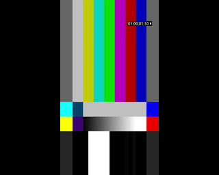
tests/test_outputs/format_validator/test_format_png_alt2_color_bars_680×1209.wavCreated: yes
bin/slowframe -i tests/images/alt_color_bars_320x256.png -p m1 -o tests/test_outputs/format_validator/test_format_png_alt_color_bars_320x256.wav -KInput
Output

tests/test_outputs/format_validator/test_format_png_alt_color_bars_320x256.wavCreated: yes
bin/slowframe -i tests/images/test_400x300.png -p m1 -o tests/test_outputs/format_validator/test_format_png_test_400x300.wav -KInput
Output
tests/test_outputs/format_validator/test_format_png_test_400x300.wavCreated: yes
bin/slowframe -i tests/images/test_300x400.png -p m1 -o tests/test_outputs/format_validator/test_format_png_test_300x400.wav -KInput
Output

tests/test_outputs/format_validator/test_format_png_test_300x400.wavCreated: yes
bin/slowframe -i tests/images/test_320x240.png -p m1 -o tests/test_outputs/format_validator/test_format_png_test_320x240.wav -KInput
Output
tests/test_outputs/format_validator/test_format_png_test_320x240.wavCreated: yes
bin/slowframe -i 'tests/images/alt3_color_bars_1370×1080.png' -p m1 -o 'tests/test_outputs/format_validator/test_format_png_alt3_color_bars_1370×1080.wav' -KInput
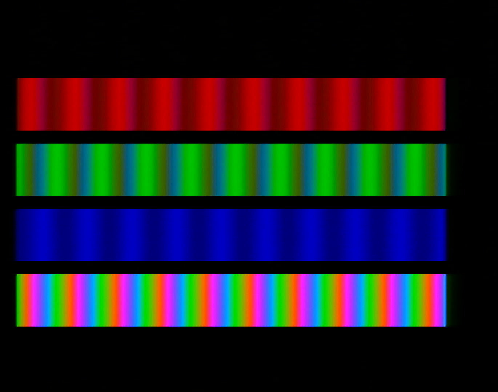
Output
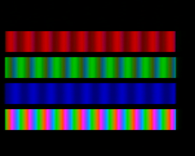
tests/test_outputs/format_validator/test_format_png_alt3_color_bars_1370×1080.wavCreated: yes
bin/slowframe -i tests/images/alt2_color_bars_2000x1125_textonly.png -p m1 -o tests/test_outputs/format_validator/test_format_png_alt2_color_bars_2000x1125_textonly.wav -KInput
Output
tests/test_outputs/format_validator/test_format_png_alt2_color_bars_2000x1125_textonly.wavCreated: yes
bin/slowframe -i tests/images/alt4_color_bars_1435x1129.png -p m1 -o tests/test_outputs/format_validator/test_format_png_alt4_color_bars_1435x1129.wav -KInput
Output
tests/test_outputs/format_validator/test_format_png_alt4_color_bars_1435x1129.wavCreated: yes
bin/slowframe -i tests/images/alt2_color_bars_2000x1125_overlay.png -p m1 -o tests/test_outputs/format_validator/test_format_png_alt2_color_bars_2000x1125_overlay.wav -KInput
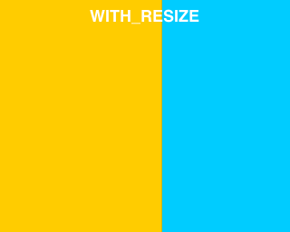
Output

tests/test_outputs/format_validator/test_format_png_alt2_color_bars_2000x1125_overlay.wavCreated: yes
bin/slowframe -i tests/images/alt_test_panel_900x692.jpg -p m1 -o tests/test_outputs/format_validator/test_format_jpg_alt_test_panel_900x692.wav -KInput
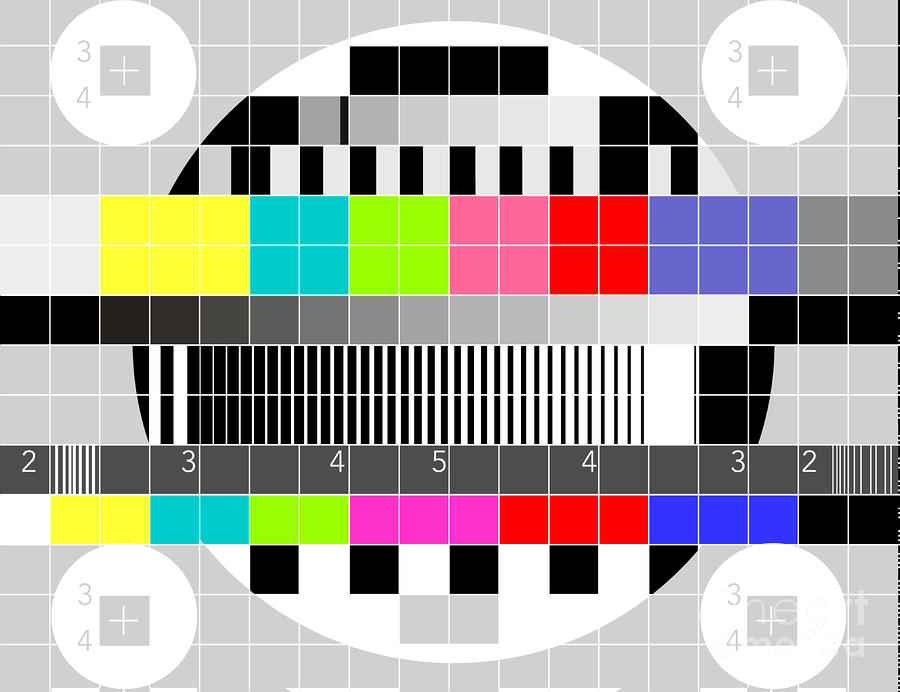
Output
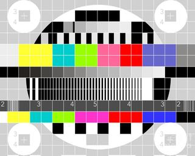
tests/test_outputs/format_validator/test_format_jpg_alt_test_panel_900x692.wavCreated: yes
bin/slowframe -i tests/images/alt5_test_panel_1728x1728.jpg -p m1 -o tests/test_outputs/format_validator/test_format_jpg_alt5_test_panel_1728x1728.wav -KInput
Output
tests/test_outputs/format_validator/test_format_jpg_alt5_test_panel_1728x1728.wavCreated: yes
bin/slowframe -i tests/images/alt7_test_panel_1440x1080.jpg -p m1 -o tests/test_outputs/format_validator/test_format_jpg_alt7_test_panel_1440x1080.wav -KInput
Output
tests/test_outputs/format_validator/test_format_jpg_alt7_test_panel_1440x1080.wavCreated: yes
bin/slowframe -i tests/images/alt4_test_panel_2048x1536.jpg -p m1 -o tests/test_outputs/format_validator/test_format_jpg_alt4_test_panel_2048x1536.wav -KInput
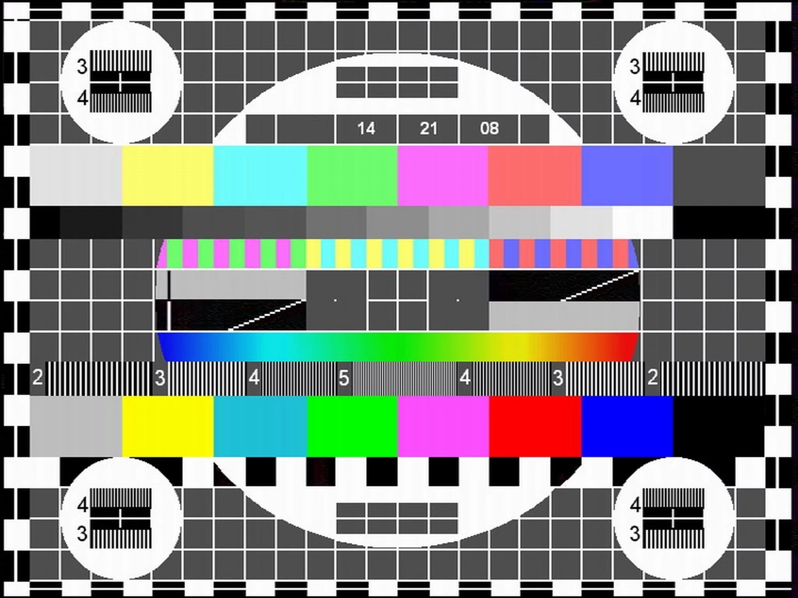
Output
tests/test_outputs/format_validator/test_format_jpg_alt4_test_panel_2048x1536.wavCreated: yes
bin/slowframe -i tests/images/color_bars_640x480.jpg -p m1 -o tests/test_outputs/format_validator/test_format_jpg_color_bars_640x480.wav -KInput
Output
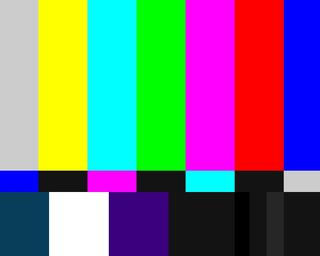
tests/test_outputs/format_validator/test_format_jpg_color_bars_640x480.wavCreated: yes
bin/slowframe -i tests/images/alt3_test_panel_9600x5400.jpg -p m1 -o tests/test_outputs/format_validator/test_format_jpg_alt3_test_panel_9600x5400.wav -KInput

Output
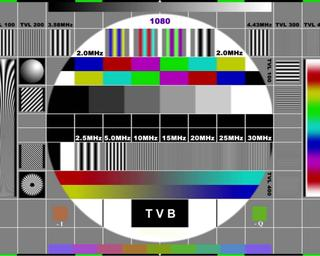
tests/test_outputs/format_validator/test_format_jpg_alt3_test_panel_9600x5400.wavCreated: yes
bin/slowframe -i tests/images/alt5_test_panel_1920x1230.jpg -p m1 -o tests/test_outputs/format_validator/test_format_jpg_alt5_test_panel_1920x1230.wav -KInput
Output
tests/test_outputs/format_validator/test_format_jpg_alt5_test_panel_1920x1230.wavCreated: yes
bin/slowframe -i tests/images/alt3_test_panel_9600x5400_large.jpg -p m1 -o tests/test_outputs/format_validator/test_format_jpg_alt3_test_panel_9600x5400_large.wav -KInput

Output
tests/test_outputs/format_validator/test_format_jpg_alt3_test_panel_9600x5400_large.wavCreated: yes
bin/slowframe -i tests/images/alt5_color_bars_1920x1080.jpg -p m1 -o tests/test_outputs/format_validator/test_format_jpg_alt5_color_bars_1920x1080.wav -KInput
Output
tests/test_outputs/format_validator/test_format_jpg_alt5_color_bars_1920x1080.wavCreated: yes
bin/slowframe -i tests/images/alt_color_bars_320x256.jpeg -p m1 -o tests/test_outputs/format_validator/test_format_jpeg_alt_color_bars_320x256.wav -KInput
Output
tests/test_outputs/format_validator/test_format_jpeg_alt_color_bars_320x256.wavCreated: yes
bin/slowframe -i tests/images/alt_color_bars_320x256.gif -p m1 -o tests/test_outputs/format_validator/test_format_gif_alt_color_bars_320x256.wav -KInput
Output
tests/test_outputs/format_validator/test_format_gif_alt_color_bars_320x256.wavCreated: yes
bin/slowframe -i tests/images/alt_color_bars_320x256.bmp -p m1 -o tests/test_outputs/format_validator/test_format_bmp_alt_color_bars_320x256.wav -KInput
Output
tests/test_outputs/format_validator/test_format_bmp_alt_color_bars_320x256.wavCreated: yes
bin/slowframe -i tests/images/alt_color_bars_320x256.tiff -p m1 -o tests/test_outputs/format_validator/test_format_tiff_alt_color_bars_320x256.wav -KInput

Output
tests/test_outputs/format_validator/test_format_tiff_alt_color_bars_320x256.wavCreated: yes
bin/slowframe -i tests/images/alt_color_bars_320x256.webp -p m1 -o tests/test_outputs/format_validator/test_format_webp_alt_color_bars_320x256.wav -KInput
Output
tests/test_outputs/format_validator/test_format_webp_alt_color_bars_320x256.wavCreated: yes
bin/slowframe -i tests/images/alt_color_bars_320x240.ppm -p m1 -o tests/test_outputs/format_validator/test_format_ppm_alt_color_bars_320x240.wav -KInput

Output
tests/test_outputs/format_validator/test_format_ppm_alt_color_bars_320x240.wavCreated: yes